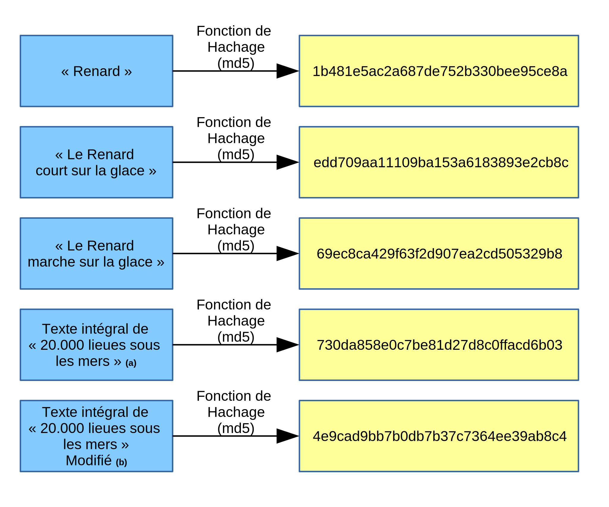

Votre mission
Découvrir le motif de déverrouillage du téléphone ! Pour vous faciliter la tâche, on vous fournit le fichier "gesture.key", extrait d'un dump de la partition /data/system du téléphone.
Dr Horrible, cet étourdi, a oublié son téléphone sur les lieux de son méfait. Malheureusement, ce dernier est protégé par un schéma ...
Découvrir le motif de déverrouillage du téléphone ! Pour vous faciliter la tâche, on vous fournit le fichier "gesture.key", extrait d'un dump de la partition /data/system du téléphone.
Il est indispensable de résoudre cette épreuve en premier : elle vous permettra notamment d'accéder à l'application de contrôle de la bombe, qui est indispensable pour la compréhension du protocole de communication.
Vous devez travailler à partir du fichier "gesture.key". Ce fichier a été extrait de la partition /data/system du téléphone, et contient l'intégralité des données dont vous avez besoin pour retrouver le motif de déverouillage.
Cette page de documentation est séparée en trois parties, selon le niveau du joueur en sécurité informatique. Vous pouvez sélectionner l'un des trois boutons ci dessous, pour accéder à la présentation des indices spécifiques à votre niveau.
Si vous n'avez jamais pratiqué d'exploitation Android et/ou que vous ne connaissez pas les vulnérabilités les plus courantes liées à cet environnement, sélectionnez le niveau débutant. Le niveau intermédiaire vous permet, armé de quelques connaissances sur les fonctions de hachage, de vous doter de quelques indices supplémentaires. Pour ces deux premiers niveaux, un script python destiné à vous faciliter l'exploitation en un minimum de temps est fourni (et oui, n'oubliez pas, l'heure tourne ! tic tac tic tac ...) Pour le niveau expert, aucun programme ni information supplémentaire n'est fournie : réservé aux bon connaisseurs des problématiques de sécurité sur Android !
Si vous êtes bloqués, n'hésitez pas à nous contacter ... Vous pouvez également visionner la solution directement en fin de page
Alors, vous vous sentez d'attaque ? c'est parti, alors ! A ce stade, vous disposez du fichier gesture.key, qui contient des données binaires résultat d'une fonction de hachage. Mais, laquelle?
Vous devez réflechir particulièrement à la façon dont vous allez mettre en place votre attaque. Il faut déjà déterminer quel type de fonction de hachage est utilisée (réflechissez sur la longueur), pourquoi ce fichier devait se trouver là où on l'a trouvé, et mettre en place un petit script d'exploitation, sans aide de notre part et avec le langage de votre choix.
Si vous bloquez sur la compréhension de ce qui est attendu, n'hésitez pas :
Bienvenue dans la partie Niveau Intermédiaire ! Il s'agit ici de vous proposer quelques rappels pour faciliter cette exploitation

Il existe énormément de fonctions de hachage différentes. Leur rôle est un peu particuliers en cryptographie, car elle ne nécessitent pas de fournir manuellement une clé. Il s'agit de fonctions qui sont non inversibles, donc une fois qu'on a calculé le hashé d'un texte initial en utilisant une fonction de hachage, il n'est en théorie plus possible de retrouver le texte original en se munissant juste du hashé (c'est la propriété dite de non inversibilité ). Pour déterminer quelle fonction de hachage a été utilisé, intéressez vous à la longueur de l'empreinte.
Lorsque vous enregistrez le motif de votre choix dans le téléphone, à chaque rond sélectionnable correspond un chiffre entre 0 et 8. Chacun de ces chiffres correspond à un octet, et doit donc être noté en hexadécimal 00,01,...,08. L'agencement est le suivant :
____________________
|0x00 | 0x01 | 0x02|
|------------------|
|0x03 | 0x04 | 0x05|
|------------------|
|0x06 | 0x07 | 0x08|
\__________________/
Un motif correspond donc à la concaténation des différents chiffres séléctionnés, dans l'ordre de leur séléction. Cette séquence numérique est ensuite transmise dans la fonction de hachage, et stockée telle quelle dans un fichier binaire nommé "gesture.key". Lorsque l'on entre un motif, la séquence correspondante est hachée et android compare le haché produit avec celui stocké dans gesture.key, et autorise le déverouillage si ils sont identiques.
Dans notre cas, une approche par bruteforce est possible : nous disposons donc du haché, et nous voudrions retrouver l'antécédent ayant produit ce haché, ce qui est en théorie impossible. Mais dans notre cas, la situation est particulière : le nombre de combinaisons possible est très faible, car l'alphabet est limité à 9 symboles (on se limitera également à une taille de motif de longueur 7 au maximum). Il y a également un certain nombre de contraintes, que nous vous laissons le soin de découvrir, qui se trouvent être très efficace pour réduire un peu plus la taille de l'ensemble des antécédents.
Vous pouvez, si vous le désirez, développer votre propre script de bruteforce dans le langage de votre choix. Cependant, nous vous proposons d'utiliser un petit programme python que nous avons réalisé pour vous faciliter la tâche. Votre rôle sera donc de le configurer en détail en y indiquant les bonnes valeurs pour réaliser efficacement ce bruteforce. Pour afficher les options disponibles, appellez le script sans argument, et vous devriez découvrir un manuel détaillé sur l'utilisation de cet outil. Bon courage !
#!/usr/bin/env python
#encoding:utf-8
import hashlib
import binascii
import os,time
import sys
from itertools import chain, product
def usage():
print "Usage : {} {} {} {} {} {} {}\n".format(sys.argv[0],"<alphabet>","<fonction de hashage>","<longueur minimale>","<longueur maximale>","<contraintes>","<valeur à inverser>")
print "Description : ce script est destiné à retrouver par force brute la valeur d'un antécédent pour une fonction de hashage donnée. Il permet notamment de choisir l'alphabet à utiliser pour générer l'antécédent, un certain nombre de contraintes à respecter (longueur, agencement), ainsi que la fonction de hashage.\n\n"
print "\n- <alphabet> : les valeurs hexadécimales de l'alphabet de départ, séparées par des virgules"
print " Exemple : pour utiliser l'alphabet 'abcd', entrer la chaîne '61,62,63,64'"
print "\n- <fonction de hashage> : valeur textuelle à choisir entre md4,md5,sha1,sha224,sha256,sha384,sha512"
print " Exemple : pour utiliser la fonction de hashage md5, entrer la chaîne md5"
print "\n- <longueur minimale> : longueur (en nombre de symboles) minimale de l'antécédent"
print " Exemple : 3"
print "\n- <longueur maximale> : longueur (en nombre de symboles) maximale de l'antécédent"
print " Exemple : 10"
print "\n- <contraintes> : chaînes de caractères désignant les contraintes à appliquer à l'antécédent, séparées par des virgules"
print " Exemple : 'sym,diff' pour que l'antécédent soit symétrique et composé de symboles tous différents"
print " -> Liste des contraintes :"
print " * succ : aucun symbole successif identique dans l'antécédent"
print " * diff : tout les symboles de l'antécédent sont différents"
print " * sym : l'antécédent est symétrique (palindrome)"
print " * asym : l'antécédent est asymétrique"
print "\n- <valeur à inverser> : valeur de l'empreinte à trouver"
print " Exemple : f02368945726d5fc2a14eb576f7276c0"
def hashfunction(hashtype,cleartext):
if hashtype in hashlib.algorithms_available:
h = hashlib.new(hashtype)
h.update(cleartext)
return h.hexdigest()
else:
return None
def bruteforce(alphabet, minlength,maxlength):
return (''.join(candidate)
for candidate in chain.from_iterable(product(alphabet, repeat=i)
for i in range(minlength, maxlength + 1)))
def contrainte_nonsuccessifs(mot):
for i in range(0,len(mot)-1):
if mot[i]==mot[i+1]:
return False
return True
def contrainte_tousdifferents(mot):
trouves = []
for l in mot:
if l in trouves:
return False
else:
trouves.append(l)
return True
def contrainte_symetrique(mot):
i = 0
while i < len(mot):
if mot[i] != mot[-i-1]:
return False
i+=1
return True
def contrainte_asymetrique(mot):
return not contrainte_symetrique(mot)
def verifier_contraintes(mot,contraintes):
examen = True
if "succ" in contraintes:
examen = examen and contrainte_nonsuccessifs(mot)
if "diff" in contraintes:
examen = examen and contrainte_tousdifferents(mot)
if "sym" in contraintes:
examen = examen and contrainte_symetrique(mot)
if "asym" in contraintes:
examen = examen and contrainte_asymetrique(mot)
return examen
if len(sys.argv) == 7:
alphabetascii = sys.argv[1].split(",")
hashtype = sys.argv[2]
lmin = int(sys.argv[3])
lmax = int(sys.argv[4])
contraintes = sys.argv[5].split(",")
valeur = sys.argv[6]
alphabet = []
for i in alphabetascii:
alphabet.append(binascii.unhexlify(i))
for mot in bruteforce(alphabet,lmin,lmax):
if (verifier_contraintes(mot,contraintes)):
motaff = binascii.hexlify(mot)
hashmot = hashfunction(hashtype,mot)
print "{} -[{}]-> {}".format(motaff,hashtype,hashmot),
if hashmot == valeur:
print "\033[32m V\033[39m"
print "\033[32mHash inversé : {}\033[39m".format(motaff)
exit(0)
else:
print "\033[31m X\033[39m"
print "Hash non trouvé !"
else:
usage()
Dans cette partie, nous vous proposons une démarche détaillée, afin de mieux comprendre le principe de cette exploitation. N'hésitez pas à relire les différentes parties, l'objectif est que vous appreniez quelque chose !
Les motifs ne sont rien d'autre que le chemin tracé par les doigts sur les neuf cercles avec les nombres entre 0 et 8 du coin supérieur gauche au coin inférieur droit comme indiqué dans la figure ci-dessous.
____________________
|0x00 | 0x01 | 0x02|
|------------------|
|0x03 | 0x04 | 0x05|
|------------------|
|0x06 | 0x07 | 0x08|
\__________________/
Les différents nombres sont indiqués à l'aide de leur valeur hexadécimale : on obtient ainsi les correspondances suivantes :
Représentation décimale | Représentation hexadécimale
-----------------------------------------------------
0 | 0x00
1 | 0x01
2 | 0x02
3 | 0x03
4 | 0x04
5 | 0x05
6 | 0x06
7 | 0x07
8 | 0x08
Ainsi, un motif peut être défini comme une séquence de chiffres entre 0 et 8, indiqué en hexadécimal. Pour tracer un motif correspondant, par exemple, à la lettre "Z", on obtient la séquence suivante : 00010204060708 (0 1 2 4 6 7 8).
Une fois cette séquence enregistrée, la séquence d'octets correspondant au motif est passée en entrée de la fonction de hachage nommée "SHA1". Il s'agit d'une fonction à sens unique, qui à partir d'un texte ou d'une séquence d'octets (un fichier, par exemple), va produire une empreinte de taille fixe (40 caractères en hexadécimal dans le cas de sha1). L'objectif d'une fonction de hachage est d'empêcher de retrouver l'antécédent si on ne dispose que de l'empreinte : c'est la propriété dite de non inversibilité.
antécédent --[Fonction de Hachage]--> empreinte / haché (ou image)
Dans notre cas, cependant, on peut procéder par force brute pour retrouver l'antécédent. En effet, contrairement à l'empreinte d'un mot de passe, par exemple (composé de caractères alphanumériques), on a affaire ici à un ensemble d'antécédents très limités. En effet, il n'y a que peu de combinaisons possibles pour une telle séquence. L'objectif est donc de tester toutes les possibilités possibles (énumération des antécédents par force brute), de calculer l'empreinte SHA1 de la séquence, et de comparer celle ci avec le SHA1 contenu dans le fichier gesture.key.
Pour vous donner une idée de l'apparence d'une empreinte sha1, vous pouvez taper la commande suivante dans un interpréteur de commande Bash :
echo -n "Hello, World" | sha1sum
On obtient ainsi l'empreinte 907d14fb3af2b0d4f18c2d46abe8aedce17367bd, qui correspond ainsi au haché du texte "Hello, World" en utilisant la fonction de hachage nommée sha1.
L'utilisation d'un éditeur hexadécimal est indispensable pour extraire l'empreinte du fichier "gesture.key", car il s'agit d'un fichier binaire. Nous vous proposons, pour réaliser cette extraction, d'utiliser la commande hexdump :
hexdump gesture.key
Vous allez obtenir une sortie sous cette forme :
0000000 0102 0304 0506 0708 090a 0b0c 0d0e 0f10
0000010 1112 1314
0000014
Attention, cependant : l'affichage est inversé en raison des conventions d'organisation des octets little endian / big endian. Pour remettre le haché dans le bon ordre, il faut relever d'abord le second octet, puis le premier d'un bloc. Dans notre cas, cela nous donne : 02010403060508070a090c0b0e0d100f12111413.
Pour faciliter cette exploitation, nous vous proposons d'utiliser le script python suivant. Celui ci a été conçus pour faciliter l'exploitation : l'objectif est de vous amener à réflechir sur les différentes options à insérer dans le logiciel pour réussir l'exploitation et retrouver le motif de déverouillage. Voici le code du programme en question :
#!/usr/bin/env python
#encoding:utf-8
import hashlib
import binascii
import os,time
import sys
from itertools import chain, product
def usage():
print "Usage : {} {} {} {} {} {} {}\n".format(sys.argv[0],"<alphabet>","<fonction de hashage>","<longueur minimale>","<longueur maximale>","<contraintes>","<valeur à inverser>")
print "Description : ce script est destiné à retrouver par force brute la valeur d'un antécédent pour une fonction de hashage donnée. Il permet notamment de choisir l'alphabet à utiliser pour générer l'antécédent, un certain nombre de contraintes à respecter (longueur, agencement), ainsi que la fonction de hashage.\n\n"
print "\n- <alphabet> : les valeurs hexadécimales de l'alphabet de départ, séparées par des virgules"
print " Exemple : pour utiliser l'alphabet 'abcd', entrer la chaîne '61,62,63,64'"
print "\n- <fonction de hashage> : valeur textuelle à choisir entre md4,md5,sha1,sha224,sha256,sha384,sha512"
print " Exemple : pour utiliser la fonction de hashage md5, entrer la chaîne md5"
print "\n- <longueur minimale> : longueur (en nombre de symboles) minimale de l'antécédent"
print " Exemple : 3"
print "\n- <longueur maximale> : longueur (en nombre de symboles) maximale de l'antécédent"
print " Exemple : 10"
print "\n- <contraintes> : chaînes de caractères désignant les contraintes à appliquer à l'antécédent, séparées par des virgules"
print " Exemple : 'sym,diff' pour que l'antécédent soit symétrique et composé de symboles tous différents"
print " -> Liste des contraintes :"
print " * succ : aucun symbole successif identique dans l'antécédent"
print " * diff : tout les symboles de l'antécédent sont différents"
print " * sym : l'antécédent est symétrique (palindrome)"
print " * asym : l'antécédent est asymétrique"
print "\n- <valeur à inverser> : valeur de l'empreinte à trouver"
print " Exemple : f02368945726d5fc2a14eb576f7276c0"
def hashfunction(hashtype,cleartext):
if hashtype in hashlib.algorithms_available:
h = hashlib.new(hashtype)
h.update(cleartext)
return h.hexdigest()
else:
return None
def bruteforce(alphabet, minlength,maxlength):
return (''.join(candidate)
for candidate in chain.from_iterable(product(alphabet, repeat=i)
for i in range(minlength, maxlength + 1)))
def contrainte_nonsuccessifs(mot):
for i in range(0,len(mot)-1):
if mot[i]==mot[i+1]:
return False
return True
def contrainte_tousdifferents(mot):
trouves = []
for l in mot:
if l in trouves:
return False
else:
trouves.append(l)
return True
def contrainte_symetrique(mot):
i = 0
while i < len(mot):
if mot[i] != mot[-i-1]:
return False
i+=1
return True
def contrainte_asymetrique(mot):
return not contrainte_symetrique(mot)
def verifier_contraintes(mot,contraintes):
examen = True
if "succ" in contraintes:
examen = examen and contrainte_nonsuccessifs(mot)
if "diff" in contraintes:
examen = examen and contrainte_tousdifferents(mot)
if "sym" in contraintes:
examen = examen and contrainte_symetrique(mot)
if "asym" in contraintes:
examen = examen and contrainte_asymetrique(mot)
return examen
if len(sys.argv) == 7:
alphabetascii = sys.argv[1].split(",")
hashtype = sys.argv[2]
lmin = int(sys.argv[3])
lmax = int(sys.argv[4])
contraintes = sys.argv[5].split(",")
valeur = sys.argv[6]
alphabet = []
for i in alphabetascii:
alphabet.append(binascii.unhexlify(i))
for mot in bruteforce(alphabet,lmin,lmax):
if (verifier_contraintes(mot,contraintes)):
motaff = binascii.hexlify(mot)
hashmot = hashfunction(hashtype,mot)
print "{} -[{}]-> {}".format(motaff,hashtype,hashmot),
if hashmot == valeur:
print "\033[32m V\033[39m"
print "\033[32mHash inversé : {}\033[39m".format(motaff)
exit(0)
else:
print "\033[31m X\033[39m"
print "Hash non trouvé !"
else:
usage()
Pour utiliser ce programme, tapez les commandes suivantes dans un interpréteur :
$ cat > bruteforce.py
>>Copier coller ici le contenu du script, puis Ctrl + C <<
$ chmod +x bruteforce.py
$ python bruteforce.py
Examinons pour commencer le fichier d'aide :
Usage : bruteforce.py <alphabet> <fonction de hashage> <longueur minimale> <longueur maximale> <contraintes> <valeur à inverser>
Description : ce script est destiné à retrouver par force brute la valeur d'un antécédent pour une fonction de hashage donnée. Il permet notamment de choisir l'alphabet à utiliser pour générer l'antécédent, un certain nombre de contraintes à respecter (longueur, agencement), ainsi que la fonction de hashage.
- <alphabet> : les valeurs hexadécimales de l'alphabet de départ, séparées par des virgules
Exemple : pour utiliser l'alphabet 'abcd', entrer la chaîne '61,62,63,64'
- <fonction de hashage> : valeur textuelle à choisir entre md4,md5,sha1,sha224,sha256,sha384,sha512
Exemple : pour utiliser la fonction de hashage md5, entrer la chaîne md5
- <longueur minimale> : longueur (en nombre de symboles) minimale de l'antécédent
Exemple : 3
- <longueur maximale> : longueur (en nombre de symboles) maximale de l'antécédent
Exemple : 10
- <contraintes> : chaînes de caractères désignant les contraintes à appliquer à l'antécédent, séparées par des virgules
Exemple : 'sym,diff' pour que l'antécédent soit symétrique et composé de symboles tous différents
-> Liste des contraintes :
* succ : aucun symbole successif identique dans l'antécédent
* diff : tout les symboles de l'antécédent sont différents
* sym : l'antécédent est symétrique (palindrome)
* asym : l'antécédent est asymétrique
- <valeur à inverser> : valeur de l'empreinte à trouver
Exemple : f02368945726d5fc2a14eb576f7276c0
Voyons comment remplir ces différents paramètres :
??,??,??,?? ...sha1Bon courage !